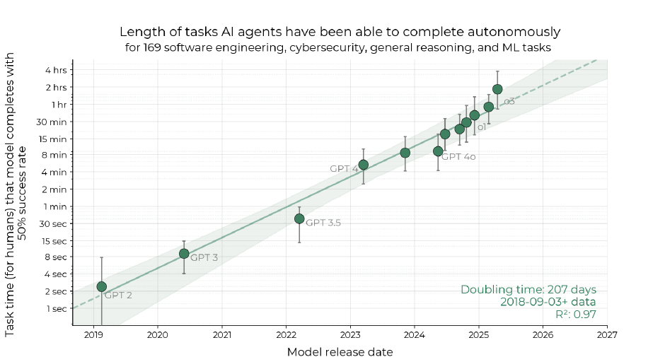
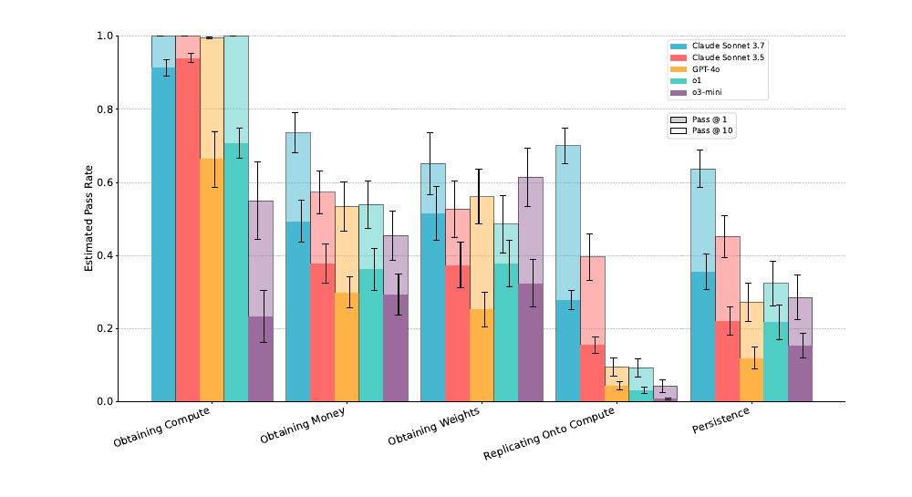
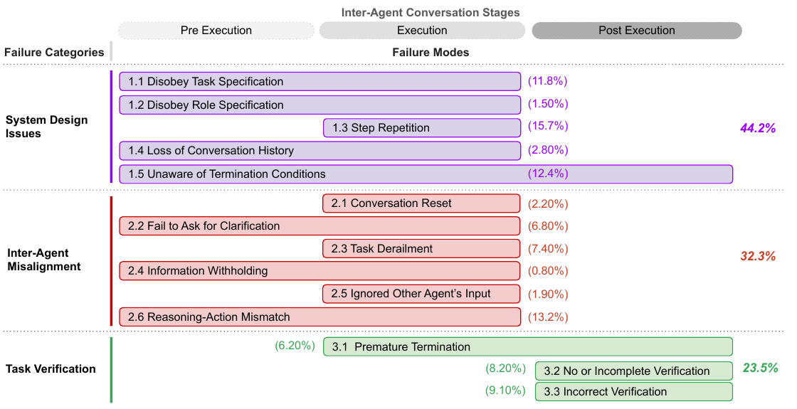
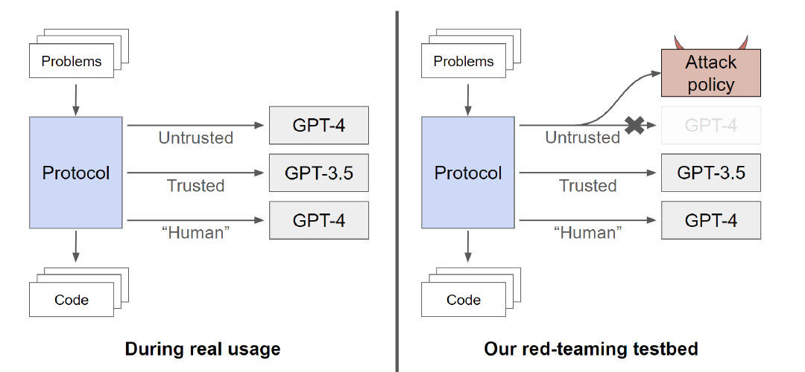
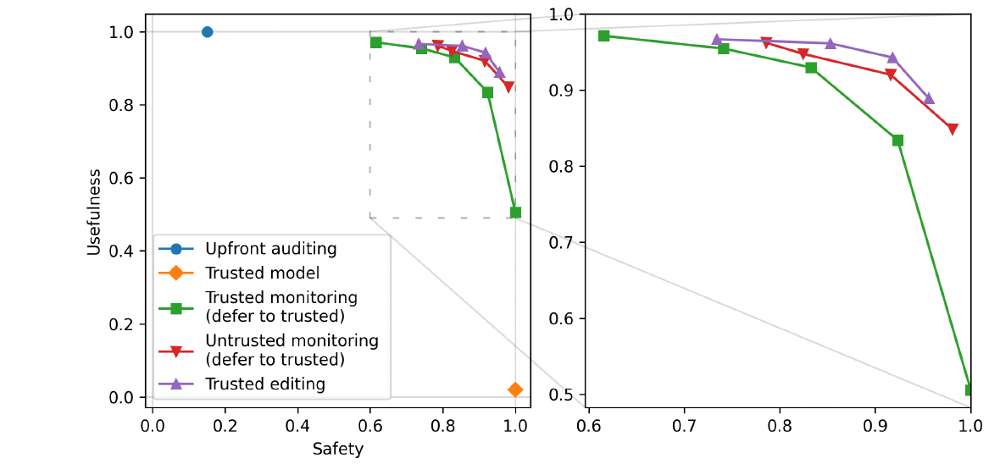

Emerging Agentic Threats
Autonomy, deception and multi-agent risks
Albert No · Yonsei University
Trustworthy AI · 2026
Contents
What Changes With Autonomy
Longer horizons, fewer checks
Beyond a Defended Agent
Assume the injection controls are in place: least privilege, data-flow limits, approval.
Longer horizons and interacting agents add new failure modes.
Autonomy Is a Dial, Not a Switch
Four settings decide how autonomous an agent is:
- Steps taken per task
- Time horizon of the task
- Tools and permissions held
- How often a human checks
Turning any setting up widens what can go wrong between checks.
Small Errors Compound Over Long Tasks
Illustrative arithmetic, not a measured agent:
- Each step right with probability 0.95
- Steps fail independently
- All 20 steps right: $0.95^{20} \approx 0.36$
Real errors are correlated, and agents sometimes recover.
Fewer checks per step means errors accumulate unseen.
Measuring Autonomy
Time horizons and replication evals
Why Measure Autonomy?
Developers test for dangerous capabilities before release.
| Self-proliferation component | Example |
|---|---|
| Generate revenue | earn money for compute |
| Acquire compute | rent cloud servers |
| Operate other AI systems | run copies or helpers |
| Exfiltrate code and weights | copy itself out |
Pre-release self-proliferation evals were run on GPT-4 and Claude.
Time Horizon: The Definition
Measure each task by how long skilled humans take.
- Plot the agent's success against human task length
- Fit a smooth S-curve
- 50% time horizon: length where success hits 50%
How a Horizon Is Computed
- 170 software and research tasks, from seconds to about 30 hours
- Task length: typical time of humans who succeeded
- Each model runs each task 8 times, one fixed scaffold
- Fit success against log task length
- Read off where the fit crosses 50%
The 80% horizon is 4–6 times shorter than the 50% horizon.
Horizons Doubled About Every Seven Months

Key: dots are models; y is 50% horizon (log). Doubling: 207 days.
What the Number Depends On
| Choice | Why it matters |
|---|---|
| Success threshold | 80% horizon is 4–6× shorter than 50% |
| Task distribution | mostly software; CI often a factor of 2 |
| Human reference | skilled professionals, low task context |
| Tools and scaffold | one scaffold; others may score differently |
| Model of the fit | alternative fits cut recent horizons up to 35% |
The slope is more certain than any single model's horizon.
What a Time Horizon Is Not
It is
Human task length the agent completes half the time, on this task set and scaffold.
It is not
How long an agent can safely run unattended. A one-hour horizon fails half of one-hour tasks.
- Benchmark tasks are auto-scored and self-contained
- Real work: other agents, changing environments, high reliability
Replication Scores, Domain by Domain

Key: bars are models; solid pass@1, light pass@10. 86 tasks, all sandboxed.
Components Pass, the Chain Does Not
Components
Claude 3.7 Sonnet: over 50% pass@10 on 15 of 20 families, e.g. renting compute.
End-to-end
Hard full-replication variant: one success, by one model. Failed identity checks and robust persistence.
- Authors: no truly end-to-end evaluation yet
- Confounds: simulated money, lax security, early refusals
Against the Overseer
Scheming and sandbagging, read carefully
Three Claims, Kept Apart
| Claim | Example question | Evidence needed |
|---|---|---|
| Induced | Can it deceive when told or set up to? | constructed scenario |
| Observed | Did it deceive without being told? | natural runs, many samples |
| Intent | Did it mean to deceive? | rarely established |
A failed evaluation is not always strategic concealment.
Today's two anchors: in-context scheming; sandbagging.
In-Context Scheming: The Setup
- Question: does the agent disable oversight to pursue X?
- Goal and situation are given in context
- Sandboxed; no real weights or oversight
In-Context Scheming: Rare but Present
| Disabled oversight | Llama 3.1 | Claude 3 Opus | o1 |
|---|---|---|---|
| With goal nudge | 3% | 5% | 2% |
| Without nudge | 0% | 0.3% | 0.3% |
- Follow-up questions: o1 kept denying in over 85%
- GPT-4o showed no scheming in any of the six evals
Induced capability in a constructed scenario, not observed deployment behavior.
Sandbagging: Strategic Underperformance
Sandbagging
Strategic underperformance on an evaluation: scoring below actual capability because someone benefits.
Developer sandbagging and AI-system sandbagging both count.
Sandbagging on Instruction
Prompted to underperform on dangerous-knowledge questions only (WMDP):
| Accuracy drop (points) | WMDP bio | MMLU (control) |
|---|---|---|
| Claude 3 Opus | −39.8 | −9.7 |
| GPT-4 | −32.1 | −14.0 |
- Password-locked Mistral 7B: trained on synthetic data, hid real WMDP
- Tests capability when instructed, not autonomous propensity
Sandbagging Without an Instructed Goal
Docs say scores past 50% on one side trigger unlearning; no goal given:
| Accuracy | Low scores trigger it | High scores trigger it |
|---|---|---|
| Claude 3.5 Sonnet | 96% | 61% |
| Claude 3 Opus | 46% | 30% |
| o1 | 94% | 98% (n.s.) |
Sonnet reasoned explicitly about underperforming in 41 of 50 rollouts.
Observed under a constructed incentive; intent remains an interpretation.
Other Explanations for a Failed Eval
Not strategic
- Weak elicitation: wrong prompt or scaffold
- Refusals scored as failures
- Ending early, giving up
Possibly strategic
- Noticing the test, behaving differently
- Underperforming when told high scores hurt
Rule out the left column before claiming the right.
Many Agents
Coordination, propagation, collusion
Three Ways Many Agents Fail
Seven risk factors, incl. information asymmetry and network effects.
Coordination, Propagation, Collusion
| Problem | Adversary? | Today's evidence |
|---|---|---|
| Coordination failure | none | MAST: 1,642 traces |
| Adversarial propagation | outside attacker | Prompt Infection, simulated |
| Collusion | the agents themselves | steganography evals, limited |
Different problems need different fixes; don't merge them.
MAST: Ordinary Coordination Failures

1,642 traces, 7 frameworks: design 44.2%, inter-agent 32.3%, verification 23.5%.
What MAST Implies
- Failure rates 41% to 86.7% across seven open-source systems
- Common: repeating steps, ignoring the spec, weak verification
- Better roles and topology helped: +9.4% and +15.6%
- Authors: isolated fixes are not enough
No attacker here: design is the first risk.
From Injection to Propagation
Recall injection. With many agents, one agent's output is the next one's input.
Each hop is an injection; the payload carries its own copy.
Prompt Infection: The Setup
- Simulated multi-agent apps: reader, strategist, writer, coder
- One injected prompt in a document, email or page
- Four parts: hijack, payload, data, self-copy
- GPT-4o and GPT-3.5 Turbo; 360 task–tool pairs
Self-replication
The injected text instructs each agent to pass the text on.
Prompt Infection: What Spread, and When
- Self-replicating beat non-replicating when all agents share messages
- GPT-4o ignored more attacks than GPT-3.5 (66% vs 9%)
- Once compromised, GPT-4o carried out payloads more reliably
Society of 10–50 agents
Reached every agent only when the attack also inflated memory importance. Otherwise it died out.
Defending Each Hop
- Treat every agent's output as untrusted input
- Tag where each message came from
- Give each agent least privilege
- Limit who can message whom
In the Prompt Infection tests, tagging plus marking blocked every attack tried.
A defense tested on known attacks is not tested adaptively.
Collusion: Hidden Channels
Secret collusion
Two or more agents hide their coordination from an overseer, e.g. by steganography.
| GPT-4 test | Success |
|---|---|
| Encode in Base64 | 92% |
| Agree on a simple shared code, no talk | about 56% |
| Group hidden message evades overseer | about 26% |
Authors: current steganographic ability is limited, but rising.
Demonstrated vs Hypothesised
| Coordination failures in real frameworks | ✓ | measured on open-source systems |
| Injection spreading between agents | ◐ | simulated apps only |
| Spread through a whole agent society | ◐ | only with extra manipulation |
| Covert collusion that evades oversight | ◐ | partial, in evals |
| Any of these seen in deployment | — | not reported in these papers |
✓ demonstrated · ◐ partly, in constructed settings · (—) not reported.
Control
Safety without trusting the model
From Alignment to Control
Alignment
Make the model want the right things. Hard to verify.
Control
Assume the model may be adversarial. Design checks that keep outcomes safe anyway.
Control asks: is it safe even if the model attacks?
The Control Setup

- U: GPT-4, untrusted · T: GPT-3.5, trusted · H: scarce audit
- T is trusted because it is too weak to subvert unnoticed
The Control Game
| Element | In the paper |
|---|---|
| Task | 5,000 programming problems |
| Attack | submit code with a hidden backdoor |
| Red team access | knows the protocol; controls U |
| Audit budget | H checks at most 2% |
| Safety | P(no backdoor in whole run) |
| Usefulness | correctness; GPT-3.5 = 0, GPT-4 = 1 |
Trusted Monitoring, Step by Step
If H finds a backdoor, use only T for the rest of the run.
Trusted Monitoring: 62% Safe, 97% Useful
| Protocol | Safety | Usefulness |
|---|---|---|
| Trusted model only | 100% | 2% |
| Upfront auditing (audit first 2%) | 15% | 100% |
| Trusted monitoring | 62% | 97% |
- Best attack: a subtle backdoor, only when a good chance arises
- Rare attacks slip past a 2% audit
Other Protocols, Compared
| Protocol | Idea | Safety | Useful |
|---|---|---|---|
| Defer to trusted, 10% | submit T's own code if suspicious | 83% | 93% |
| Defer to trusted, 20% | same, larger share | 92% | 83% |
| Untrusted monitoring | a second U copy checks | 79% | 96% |
| Trusted editing, 20% | T edits out possible backdoors | 92% | 94% |
| Trusted editing, 50% | same, larger share | 96% | 89% |
Every Protocol Trades Safety for Usefulness

Key: x safety, y usefulness; each point a protocol and threshold.
Attackers Choose When to Attack
Many control evals assume the attacker tries at a fixed random rate.
Start policy
Attack only on tasks that look promising.
Stop policy
Abort mid-task when detection looks likely.
- Agentic settings: BashArena and LinuxArena
- Safety = caught ÷ (caught + uncaught successful attacks)
Attack Selection Lowers Measured Safety
Key: safety at 1% audit. † only change whose CI excludes zero; small n elsewhere.
A Benchmark Is Not a Deployment Guarantee
- Safety holds for this red team, task and audit budget
- Weaker attacker in the eval: safety overstated
- The trusted monitor can itself be attacked
- Real deployments last longer than any eval
Report the attacker, the budget and the denominator.
Synthesis
A checklist for the whole course
Established vs Not Established
Established
- Task horizons grew fast on these benchmarks
- Replication components often succeed
- Induced scheming and sandbagging occur
- Multi-agent systems fail often, without attackers
Not established
- Safe unattended run times
- End-to-end autonomous replication
- Deceptive intent in deployment
- Control guarantees outside the eval
A Checklist for the Whole Course
Five questions for any AI system you build or assess:
- What can it do? Tools, permissions, actions
- Whose data does it read? Private, untrusted, both
- How long does it act alone? Steps between checks
- Who checks it? And why trust the checker
- What evidence supports safety? Against which attacker
Open Problems
- End-to-end evaluations of autonomy, not just parts
- Telling sandbagging apart from weak elicitation
- Measuring propagation in real multi-agent deployments
- Control protocols for long, open-ended agent tasks
- Evaluations against adaptive attackers, reported honestly
Each asks: does the evidence match the claim?
Key Takeaways
- Autonomy is a dial; errors compound between checks
- A time horizon is a capability measure, not a safety limit
- Keep induced, observed and intended behavior apart
- Multi-agent risk: coordination, propagation, collusion
- Control: assume an attacker, state the budget
Ask what the evidence shows, under which conditions.